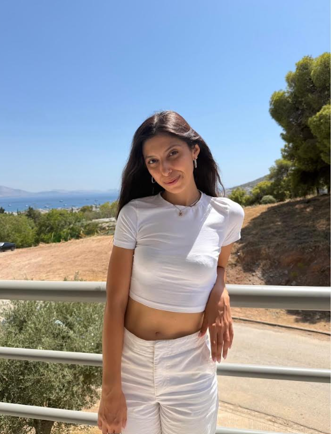
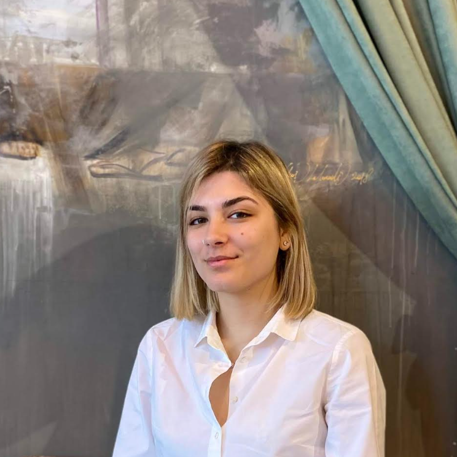
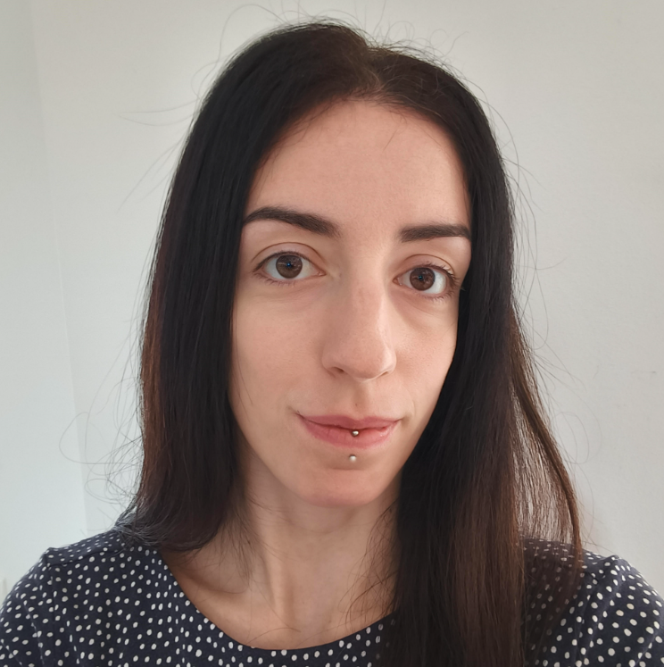
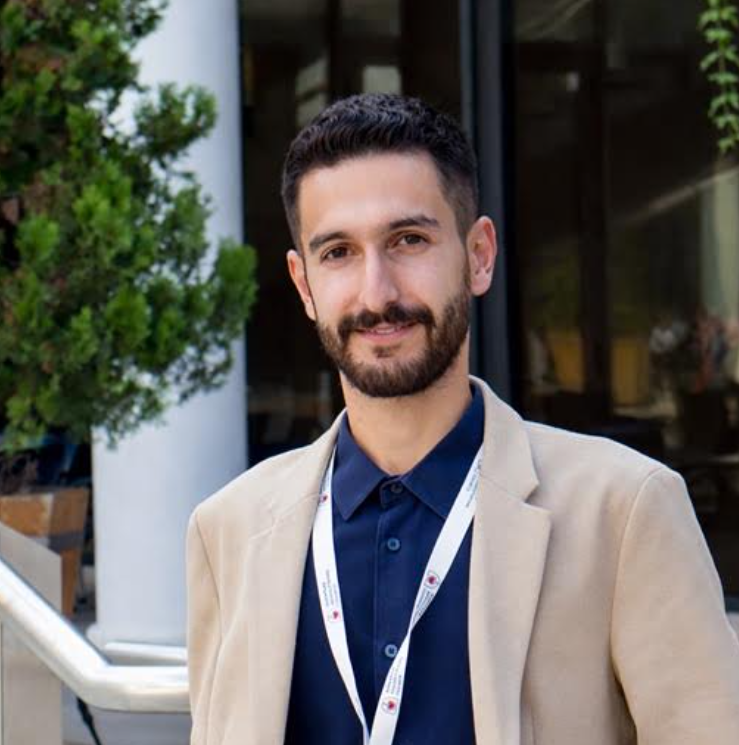
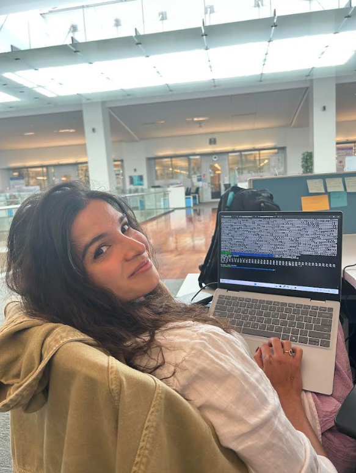
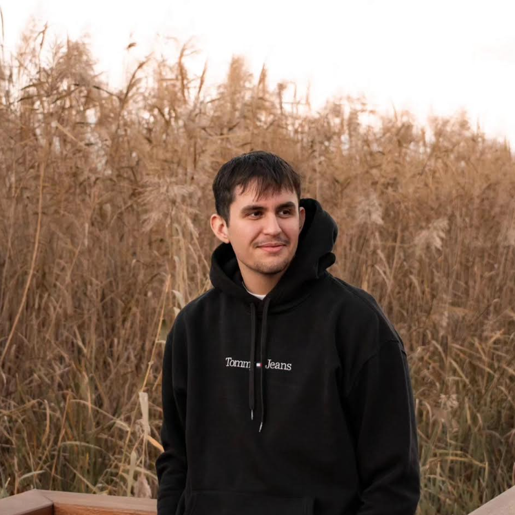
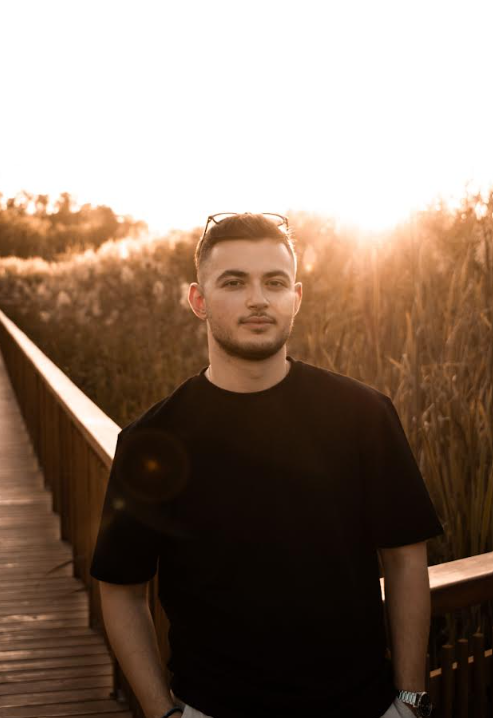
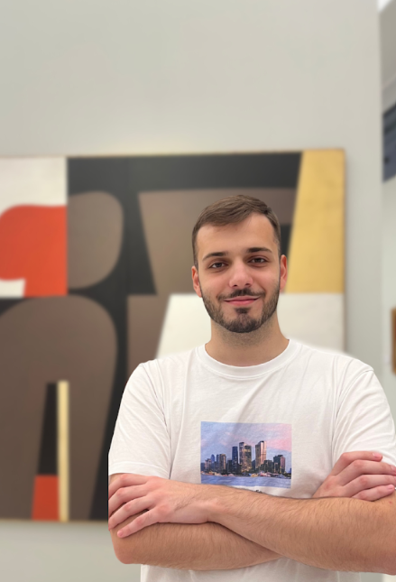
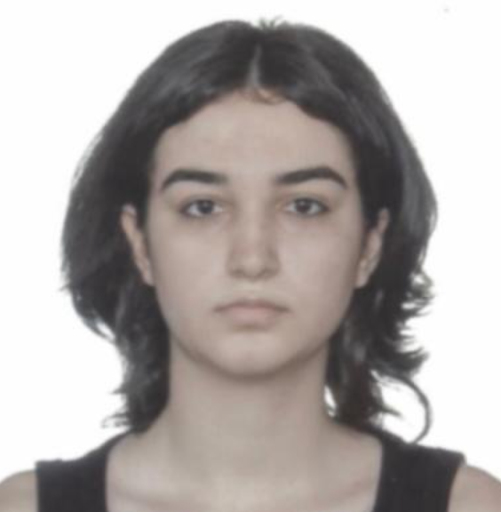
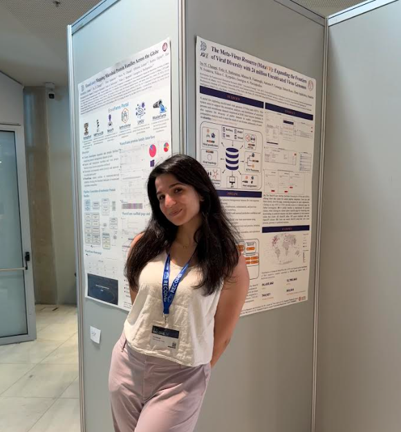

Meet the Volunteers
The people behind Social Media, Project, and Runners - the three teams making big happen.
Coordinator
Oversees all teams and helps keep big running as one coordinated effort.

A molecular biologist pursuing a PhD in bioinformatics. Fascinated by microbial communities and protein structures. Perpetually debating logos and symmetry with her supervisor.
Project Team
Designs the activities built specifically for students - "Meet the Speaker," workshops, and networking.
Short bio goes here.

I'm a pharmacist currently pursuing a Master's degree in Molecular Biomedicine! At the moment, I'm doing my thesis in the Pavlopoulos' Lab, while trying to decide whether my future holds a PhD in bioinformatics… or a career as a swing dancer.

Ms. Zormpa holds an MSci in Applied Biology and Biotechnology from the Agricultural University of Athens, with experience in genetic analysis and bioinformatics, particularly in Ankylosing Spondylitis research. She is currently completing her master's degree in Molecular Biopathology at the National and Kapodistrian University of Athens, where she developed reproducible scRNAseq analysis workflows and a web application for interactive data exploration. Her research focuses on bioinformatic approaches to target discovery and disease characterization, with broader interests in disease modeling, systems biology, and integrative computational tools.

Experience in building scalable, cross-platform solutions, specializing in bioinformatics and digital health platforms. Specialized in full-stack architecture with expertise in processing complex biological data and deploying machine learning models.
Runners
On-site during the forum itself - handling whatever comes up in the moment.
Social Media Team
Tells the story of the forum in creative ways - social media, outreach to universities, and content production.

Leading Social Media for a third year running. Handles outreach to universities and academic offices, plus the content calendar across every channel.

A biologist with an interest in bioinformatics, computational biology, and the application of artificial intelligence in the health sciences. I have experience in biomedical data analysis and a particular interest in bridging biology with modern computational methods. In addition, I am passionate about basketball and sports, which are an important part of my everyday life.

I am a Biology graduate, currently pursuing my MSc in Bioinformatics. I tend to be curious about biology, informatics and technology, and always interested in their intersection. Just don't give me too many math problems! Really excited to be a part of the BioInnovation Forum Team!

Panagiotis seeks to understand how microbes shape the eukaryotic world by studying bacteria with insecticidal properties. As coordinator of the Panhellenic Student Conference of Bioscientists, he aims to foster networking and inspiration within the student community, while also exploring science communication and bringing knowledge back to where it ultimately belongs - to people.

I'm Loukia Tryfona, with a strong interest in molecular biology, immunology, and scientific research. I am also passionate about volunteering and contributing to initiatives that create a positive impact in the community.

Coding my way from industry to academia.